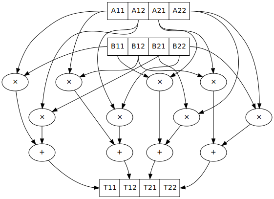

Concurrency
As Go says, the rise of multicore CPUs means that a language should provide first-class support for concurrency and parallelism. But concurrency and multi-threaded programming have over time developed a reputation for difficulty. So let’s get it right.
Model
The general idea with concurrency is there are multiple threads of execution. But practically there are several types of threads:
An OS thread is the basic unit to which the operating system allocates processor time. A thread can execute any part of the process code, including parts currently being executed by another thread. A thread may be bound to a core or have that decided by the OS. There is thread-local storage but generally fiber-local storage should be preferred. (1, [Nis18] section 2.3.1)
A UMS thread is a special type of Windows thread which has more application control. An application can switch between UMS threads in user mode without involving the system scheduler and regain control of the processor if a UMS thread blocks in the kernel. Each UMS thread has its own thread context. The ability to switch between threads in user mode makes UMS more efficient than thread pools for short-duration work items that require few system calls.
A fiber (green thread, virtual thread, goroutine) consists of a stack, saved registers, and fiber local storage. A fiber runs in the context of a thread and shares the thread context with other fibers. Fiber switching is fewer instructions than a thread context switch. When fibers are integrated into the runtime they can be more memory efficient than OS threads - Go uses only one page for the stack and reallocates the stack if it needs a larger one (contiguous stacks). Per Microsoft, fibers in C do not provide many advantages over threads.
Threads have their own thread-local state/storage, but they do not exist in a vacuum; most of their state is shared with other threads running in the same context. This context may have several levels:
A node is a physical or virtual machine in a cluster
A pod is a group of one or more containers, that share storage and network resources and runs on a single node
A container / namespace (Linux) / silo (Windows) contains one or more applications in an isolated form with all dependencies loaded from the container image
A cgroup (Linux) / job object (Windows) is a group of processes whose resource usage is managed as a unit. Cgroups / job objects are arranged in a hierarchy of containment - cgroups may have multiple hierarchies for distinct resources, but job objects have only one hierarchy. A process belongs to one most specific job object / cgroup in each hierarchy. Cgroups / job objects have rules for assigning newly spawned processes to themselves, and there is an atomic API call to terminate all processes in the cgroup / job object, contrary to what this says (the API call was added later).
An application is the result of invoking a binary and consists of one or more running processes.
A process is an executing program and has a memory space and other resources allocated. One or more threads run in the context of the process.
As far as storage, all immutable data exists in ambient space and is transparently copied by the memory management system as needed. Mutable data is stored in a specific location (TLS, process context, etc.) and is accessed via specialized, imperative concurrent operations.
Concurrent operations
At the lowest level, a thread uses a combination of hardware and OS operations. The hardware operations are read/write on mutable shared memory, and various memory barrier/fence instructions. The OS syscalls are a mess but can be roughly tagged as files, networking, process, (shared) memory, permissions, system clock, futex, System V IPC, and signals. In the cloud, a thread uses mostly network-centric operations, message-passing between nodes, while on a node the operations are mostly shared memory operations due to current machine architectures.
There are many higher-level I/O concurrency abstractions: mutexes, condition variables, channels, MVars, transactional memory. These high-level interfaces are conceptually much simpler to reason about than mutable shared memory, in particular avoiding aliasing, even if there is still mutable shared memory under the covers. But mutable shared memory is a key feature of modern C++ concurrency implementations and it would significantly reduce expressiveness to forbid it from Stroscot. Sharing is caring.
TODO: create complete list of higher-level abstractions and figure out how to nicely expose them in the language as libraries
In Erlang we have the actor model. This had the following concurrent operations: spawn process (identified by ID), send message (any value) to process, receive next message (block indefinitely), receive next message (with timeout). These are implemented by a runtime, which ensures processes are lightweight, schedules and runs them, and manages memory like the message queues.
Memory models and races
The smallest examples of races runtimewise just have memory access. For example this program SB: [SSO+10]
x = mem 0
u = mem 0
A = mem 0
B = mem 0
t1 = fork {A := 1; x := !(read B) }
t2 = fork {B := 1; u := !(read A) }
join (t1, t2)
print (!(read x), !(read u))
Here the threads are provided by the C stdlib’s pthreads, and the operations are hardware load/store instructions. This program has a race condition, i.e. the order of writing and reading from A, B, x and u is not fixed.
At this point one might be tempted to mimic C++ or Java and say a race is undefined behavior. But in fact C++ provides an escape hatch: atomics. Every type has a corresponding atomic type, so the program can just be made valid by making every variable and operation atomic. So this is a perfectly reasonable program. C++ is just adding more ways to shoot yourself in the foot by having non-atomic shared variables.
Suppose we actually run the program on a processor a lot of times - we will see that the printed outcome may be (1,1), (1,0), (0,1), or (0,0), but values other than 0 or 1 are not observed. To predict this behavior there are corresponding “relaxed memory models”, such as x86-TSO [SSO+10] for x86 and multicopy atomicicity (MCA) [PFD+17] for ARMv8. These models have been tested to match physical processors for a wide variety of concurrent programs (‘litmus tests’) and appear to be accepted by the processor vendors as standard.
Another example is independent reads of independent writes (IRIW):
{a = X; b = Y}
{X := 1}
{Y := 1}
{c = Y; d = X}
Here the initial state is (X,Y)=(0,0), and the final state can be (a,b,c,d)=(1,0,1,0) under POWER. But both ARMv8 and x86 forbid this outcome.
Now there have been attempts to make cross-platform memory models, e.g. there is a C++11 memory model, a Java memory model, a Linux kernel memory memory model, etc. But each of these models is a poor match for hardware - the non-relaxed modes prevent outcomes possible in hardware, and require too many fences and are slow, and the relaxed mode is just the hardware but without fences. Early specifications of these models even allowed outcomes that hardware would not (e.g. reading values out of thin air). So Stroscot avoids all this abstraction overhead by using the target hardware’s memory model. This does mean some more work to implement a new platform, but I think it’s worth it. Weaker fences are more performant, and you’ll have the wrong cost model if you aren’t optimizing using the processor’s memory model. For example x86’s TSO model means that concurrent memory writes don’t need a fence at all.
Now for cross-platform programming, there are tricky cases. For example LDRD on ARM is atomic only if LPAE (large physical address extension) is supported by the processor, and even then LDRD is atomic only if it is naturally aligned. For this the cross-platform memory models are useful. But we don’t need to implement the whole model, we just have to use the fairly well-defined assembly instruction translations, for example C/C++ and Java. Then we can use the processor memory model to optimize.
So overall, determining whether a synchronization pattern is correct requires checking many cases and conditions - exactly what static verification using a memory model can help with.
the easy strateg is to just do a strong fence every time you perform a concurrent operation, such as dmb on ARM. This ensures sequential consistency which is essentially everyone’s intuitive memory model.
instead of a cross-platform model, Stroscot encourages checking platform compatibility of the program, i.e. that the two memory models make the program produce equivalent results.
Other types of races
Races not involving memory can also happen:
Two acquires of a mutex with different continuations.
Appending to a file from multiple threads
Writing files in a different order
Exiting the program from a thread, when the program is doing anything else
Races could conceivably be desired, e.g. when writing litmus tests, so it is just a warning. Also a “race” like the order of writing to files is generally not important.
Blocking
Acquiring a lock blocks until the lock is released. This introduces the problems of deadlock and starvation, which can be detected as the absence of progressing execution orders. With wait-free / atomic operations we never need to block.
Go map operations do not grab a mutex and must be synchronized by some larger data structure or computation for access from multiple goroutines. This speeds up most programs but means some programs must add synchronization to avoid crashing. It is safe to use the map read-only, and a runtime check can report when a map is modified unsafely by concurrent execution.
Simulation
On a program level Stroscot simulates the program’s (concurrent) execution, and will give a warning if it’s not deterministic or if deadlock is possible - the program is required to have the same result regardless of data race outcomes. This is checked by the verification system. Basically the simulation runs through the concurrency model and errors when the program behavior becomes visibly inconsistent. The verification system handles the nondeterminism somehow, check out papers on concurrency verification.
It’s a bit lengthy to simulate the OS interface, but operations change infrequently, so it should be maintainable. The behavior of the OS scheduler is complicated and hard to model except as an adversary. The Linux scheduler might take an unreasonably long time to schedule a particular thread even if every other thread is sleeping or calls yield. Or it might decide to run it immediately, or move it on another core, etc.
Parallelism
Parallelism - the root is “parallel” or “happening at the same time”. But with relativity, simultaneity is not absolute. We instead consider causal structure - event separation can be timelike or spacelike. Timelike separation communicates information from past to future, while no dependency is possible with spacelike separation. Hence we define an execution as a directed graph of information flow, where a node is a value and an edge is read “can casually influence” (we could also use the reverse “reads data from”). Assuming no time travel the graph is acyclic and its transitive closure forms a partial order or poset. Then things happen “in parallel” if neither causally influences the other.
For example, multiplying two 2x2 matrices:
The multiplications all happen in parallel and the additions in parallel.
There’s no explicit syntax for parallelism - pure computations have inherent parallelism. Writing it out looks like:
multiply a b =
(m,n) = dim a
(n' | n == n',o) = dim b
for [1..m] $ \i ->
for [1..o] $ \j ->
sum [ (a !! (i,k)) * (b !! (k,j)) | k <- [1 .. n] ]
for and sum can evaluate arguments in parallel. More complicated is allowing functions, for example foldMap f g (x:xs) = g (f x) (foldMap f g xs) generates a DAG of f’s and g’s if the list spine is known. Even with general recursion it should still be possible to identify data dependencies and assign DAG cells to temporary values in some fashion. Conditionals are a little hard to schedule because you have to make sure both sides can be speculated or discard the untaken branch promptly.
Stroscot schedules the instructions to maximize instruction-level parallelism, where appropriate. This takes advantage of the design of modern CPUs, where there are multiple “ports” and each port can execute an instruction simultaneously.
With large (>1000 width) matrices we might want to multiply sub-matrices on multiple threads (cores). That requires concurrency, so is handled by writing the synchronization operations explicitly. Stroscot doesn’t parallelize on the thread level by default because automatically spawning threads would be surprising, and the choice of thread/scheduler/performance model (OpenMP, OS thread, green thread) influences what granularity to split up the computation at.
But still, for complex data science computations we might want automatic parallelization that takes advantage of multicore hardware. So we can provide a DSL function parallelize to automatically rewrite pure computations to concurrent ones, implementing the “small on single thread, big splits into small” operations on top of fork/join model and taking the thread / task queue implementation as a parameter. Doug Lea’s work stealing task queues can be very efficient given the correct task granularity.
Haskell’s “par” is interesting, but too fine-grained to be efficient. You have to manually add in a depth threshold and manually optimize it. It’s just as clear to use explicit fork/join operations, and indeed the rpar/rpar/rseq/rseq pattern proposed in the Parallel Haskell book is just fork/join with different naming.
As far as the actual task granularity, Cliff Click says the break-even point is somewhere around the middle of the microsecond range, thousands of cycles / machine code instructions. Below that the overhead for forking the task exceeds the speedup from parallelism, but above you can make useful progress in another thread.